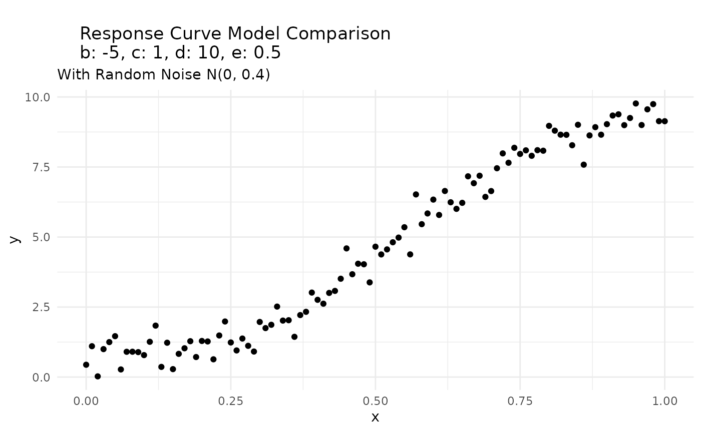
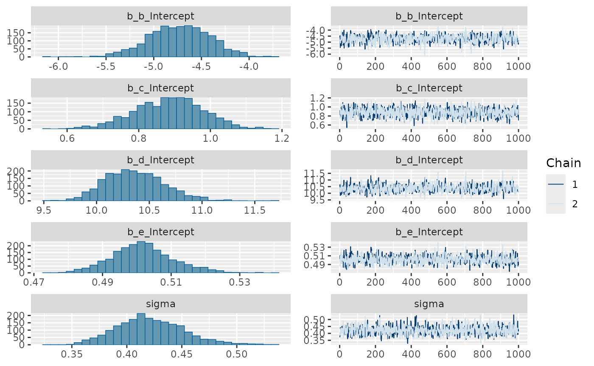
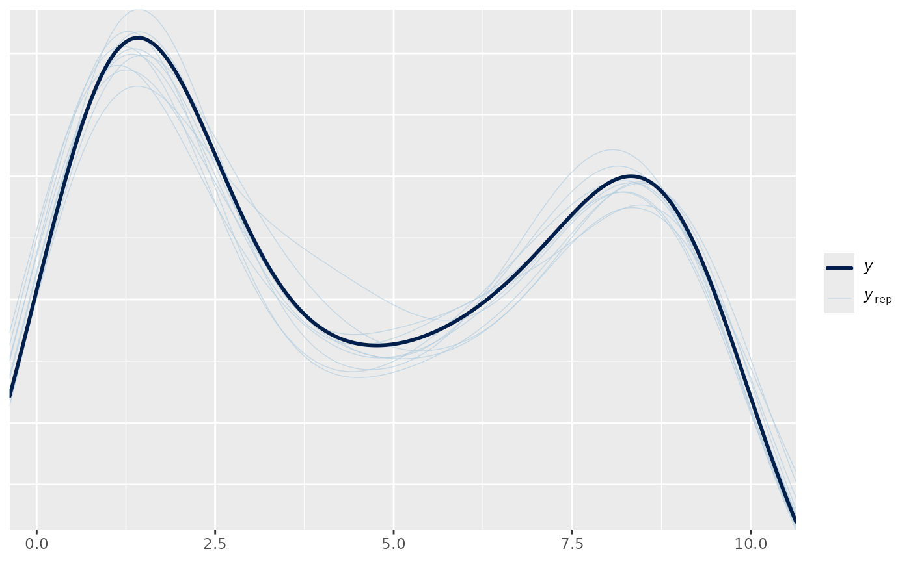
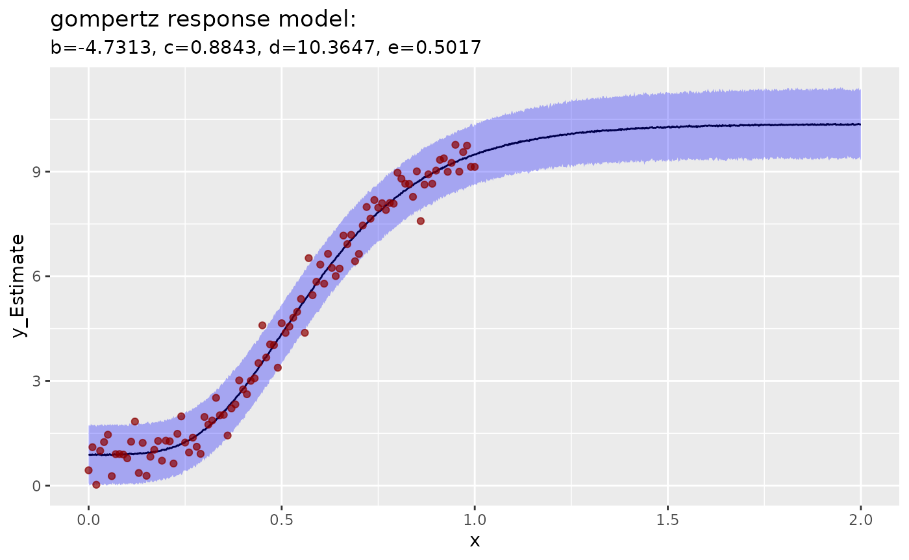
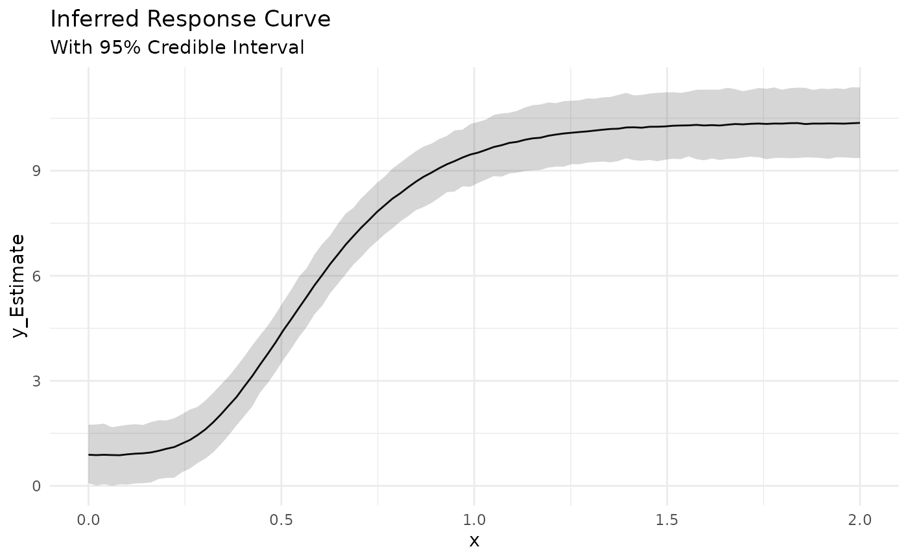
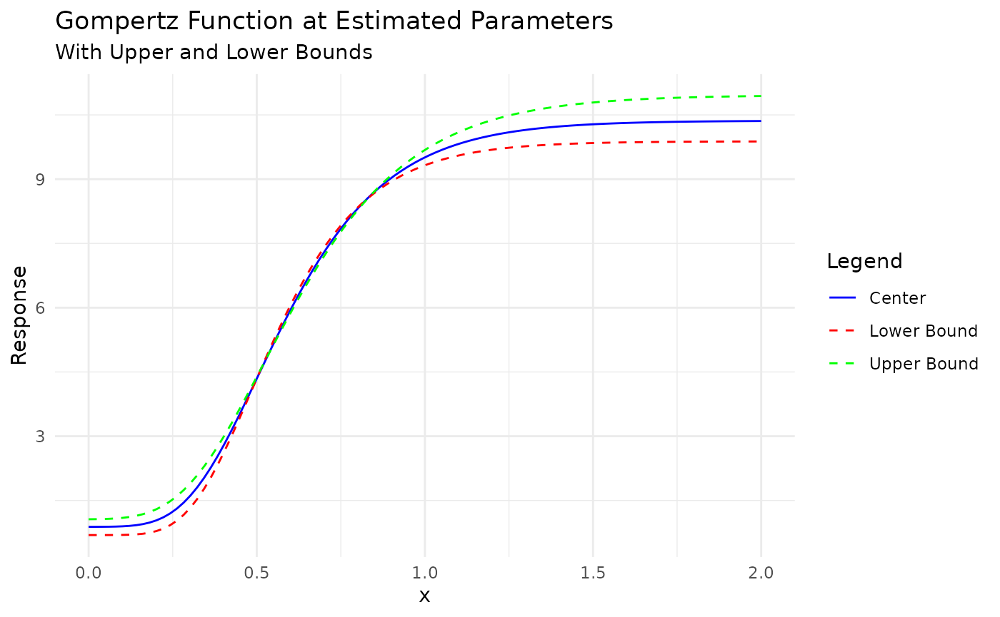

Fitting a Response Model: A Simulated Example
simulated_example.Rmd
library(mrc)
library(brms)
#> Loading required package: Rcpp
#> Loading 'brms' package (version 2.23.0). Useful instructions
#> can be found by typing help('brms'). A more detailed introduction
#> to the package is available through vignette('brms_overview').
#>
#> Attaching package: 'brms'
#> The following object is masked from 'package:stats':
#>
#> ar
library(purrr)
library(gt)
library(dplyr)
#>
#> Attaching package: 'dplyr'
#> The following objects are masked from 'package:stats':
#>
#> filter, lag
#> The following objects are masked from 'package:base':
#>
#> intersect, setdiff, setequal, union
library(ggplot2)
x_values <- seq(0, 1, by = 0.01)
b <- -5
c <- 1
d <- 10
e <- 0.5
y_response = gompertz_response_model(x_values, b, c, d, e) + rnorm(length(x_values), mean = 0, sd = 0.4)
response_df <- bind_cols(
x = x_values,
y = y_response
)
response_df |>
ggplot(aes(x, y)) +
geom_point() +
labs(title = paste0("
Response Curve Model Comparison
", "b: ", b, ", c: ", c, ", d: ", d, ", e: ", e),
subtitle = "With Random Noise N(0, 0.4)"
) +
theme_minimal()
response_fit =
fit_response(
data = response_df,
x = "x",
y = "y",
type = "gompertz",
prior = c(
prior(normal(-5, 10), nlpar = "b", lb = -10, ub = 0),
prior(normal(0, 5), nlpar = "c", ub = 4.9),
prior(normal(10, 5), nlpar = "d", lb = 5.1),
prior(normal(0.6, 2), nlpar = "e")
),
chains = 2,
iter = 2000,
warmup = 1000,
seed = 007,
control = list(adapt_delta = 0.90)
)
#> y ~ c + (d - c) * exp(-exp(b * (x - e)))
#> b ~ 1
#> c ~ 1
#> d ~ 1
#> e ~ 1
#>
#> SAMPLING FOR MODEL 'anon_model' NOW (CHAIN 1).
#> Chain 1:
#> Chain 1: Gradient evaluation took 7.8e-05 seconds
#> Chain 1: 1000 transitions using 10 leapfrog steps per transition would take 0.78 seconds.
#> Chain 1: Adjust your expectations accordingly!
#> Chain 1:
#> Chain 1:
#> Chain 1: Iteration: 1 / 2000 [ 0%] (Warmup)
#> Chain 1: Iteration: 200 / 2000 [ 10%] (Warmup)
#> Chain 1: Iteration: 400 / 2000 [ 20%] (Warmup)
#> Chain 1: Iteration: 600 / 2000 [ 30%] (Warmup)
#> Chain 1: Iteration: 800 / 2000 [ 40%] (Warmup)
#> Chain 1: Iteration: 1000 / 2000 [ 50%] (Warmup)
#> Chain 1: Iteration: 1001 / 2000 [ 50%] (Sampling)
#> Chain 1: Iteration: 1200 / 2000 [ 60%] (Sampling)
#> Chain 1: Iteration: 1400 / 2000 [ 70%] (Sampling)
#> Chain 1: Iteration: 1600 / 2000 [ 80%] (Sampling)
#> Chain 1: Iteration: 1800 / 2000 [ 90%] (Sampling)
#> Chain 1: Iteration: 2000 / 2000 [100%] (Sampling)
#> Chain 1:
#> Chain 1: Elapsed Time: 1.03 seconds (Warm-up)
#> Chain 1: 0.902 seconds (Sampling)
#> Chain 1: 1.932 seconds (Total)
#> Chain 1:
#>
#> SAMPLING FOR MODEL 'anon_model' NOW (CHAIN 2).
#> Chain 2:
#> Chain 2: Gradient evaluation took 4.8e-05 seconds
#> Chain 2: 1000 transitions using 10 leapfrog steps per transition would take 0.48 seconds.
#> Chain 2: Adjust your expectations accordingly!
#> Chain 2:
#> Chain 2:
#> Chain 2: Iteration: 1 / 2000 [ 0%] (Warmup)
#> Chain 2: Iteration: 200 / 2000 [ 10%] (Warmup)
#> Chain 2: Iteration: 400 / 2000 [ 20%] (Warmup)
#> Chain 2: Iteration: 600 / 2000 [ 30%] (Warmup)
#> Chain 2: Iteration: 800 / 2000 [ 40%] (Warmup)
#> Chain 2: Iteration: 1000 / 2000 [ 50%] (Warmup)
#> Chain 2: Iteration: 1001 / 2000 [ 50%] (Sampling)
#> Chain 2: Iteration: 1200 / 2000 [ 60%] (Sampling)
#> Chain 2: Iteration: 1400 / 2000 [ 70%] (Sampling)
#> Chain 2: Iteration: 1600 / 2000 [ 80%] (Sampling)
#> Chain 2: Iteration: 1800 / 2000 [ 90%] (Sampling)
#> Chain 2: Iteration: 2000 / 2000 [100%] (Sampling)
#> Chain 2:
#> Chain 2: Elapsed Time: 1.092 seconds (Warm-up)
#> Chain 2: 0.948 seconds (Sampling)
#> Chain 2: 2.04 seconds (Total)
#> Chain 2:
summary(response_fit)
#> Family: gaussian
#> Links: mu = identity
#> Formula: y ~ c + (d - c) * exp(-exp(b * (x - e)))
#> b ~ 1
#> c ~ 1
#> d ~ 1
#> e ~ 1
#> Data: data (Number of observations: 101)
#> Draws: 2 chains, each with iter = 2000; warmup = 1000; thin = 1;
#> total post-warmup draws = 2000
#>
#> Regression Coefficients:
#> Estimate Est.Error l-95% CI u-95% CI Rhat Bulk_ESS Tail_ESS
#> b_Intercept -4.73 0.32 -5.38 -4.13 1.01 866 736
#> c_Intercept 0.88 0.10 0.69 1.06 1.00 1142 1273
#> d_Intercept 10.36 0.28 9.88 10.96 1.00 843 665
#> e_Intercept 0.50 0.01 0.48 0.52 1.00 1015 1009
#>
#> Further Distributional Parameters:
#> Estimate Est.Error l-95% CI u-95% CI Rhat Bulk_ESS Tail_ESS
#> sigma 0.42 0.03 0.37 0.49 1.00 1228 1171
#>
#> Draws were sampled using sampling(NUTS). For each parameter, Bulk_ESS
#> and Tail_ESS are effective sample size measures, and Rhat is the potential
#> scale reduction factor on split chains (at convergence, Rhat = 1).
plot(response_fit)
pp_check(response_fit)
plot_response(response_fit)
bind_cols(
actual = c(b, c, d, e),
extract_parameters(response_fit) |>
map(~round(unlist(.x), 2)) |>
as_tibble()
) |>
gt::gt() |>
gt::tab_header(
title = "Parameter Estimates vs Actual Values",
subtitle = "Using the Gompertz Response Model"
)| Parameter Estimates vs Actual Values | |||
| Using the Gompertz Response Model | |||
| actual | center | lower | upper |
|---|---|---|---|
| -5.0 | -4.73 | -5.38 | -4.13 |
| 1.0 | 0.88 | 0.69 | 1.06 |
| 10.0 | 10.36 | 9.88 | 10.96 |
| 0.5 | 0.50 | 0.48 | 0.52 |
response = infer_response(response_fit, length.out = 100)
head(response) |>
gt::gt() |>
gt::tab_header(
title = "Inferred Response Data",
subtitle = "Using the Gompertz Response Model"
) |>
gt::fmt_number(
columns = tidyselect::everything(),
decimals = 2
)| Inferred Response Data | |||||||
| Using the Gompertz Response Model | |||||||
| x | y_Estimate | y_Est.Error | y_Q2.5 | y_Q97.5 | y_gompertz_center | y_gompertz_lower | y_gompertz_upper |
|---|---|---|---|---|---|---|---|
| 0.00 | 0.89 | 0.42 | 0.08 | 1.75 | 0.88 | 0.69 | 1.06 |
| 0.02 | 0.88 | 0.43 | 0.01 | 1.75 | 0.88 | 0.69 | 1.06 |
| 0.04 | 0.89 | 0.44 | 0.05 | 1.78 | 0.89 | 0.69 | 1.07 |
| 0.06 | 0.88 | 0.42 | 0.01 | 1.67 | 0.89 | 0.69 | 1.07 |
| 0.08 | 0.88 | 0.43 | 0.04 | 1.71 | 0.89 | 0.69 | 1.08 |
| 0.10 | 0.90 | 0.44 | 0.04 | 1.75 | 0.90 | 0.70 | 1.09 |
response |>
ggplot(aes(x, y_Estimate)) +
geom_line() +
geom_ribbon(aes(ymin = y_Q2.5, ymax = y_Q97.5), alpha = 0.2) +
labs(
title = "Inferred Response Curve",
subtitle = "With 95% Credible Interval"
) +
theme_minimal()
response |>
ggplot(aes(x, y_gompertz_center)) +
geom_line(aes(color = "center")) +
geom_line(aes(y = y_gompertz_lower, color = "lower"), linetype = "dashed") +
geom_line(aes(y = y_gompertz_upper, color = "upper"), linetype = "dashed") +
labs(
title = "Gompertz Function at Estimated Parameters",
subtitle = "With Upper and Lower Bounds",
y = "Response"
) +
theme_minimal() +
#add a legend
scale_color_manual(
name = "Legend",
values = c("center" = "blue", "lower" = "red", "upper" = "green"),
labels = c("Center", "Lower Bound", "Upper Bound")
)